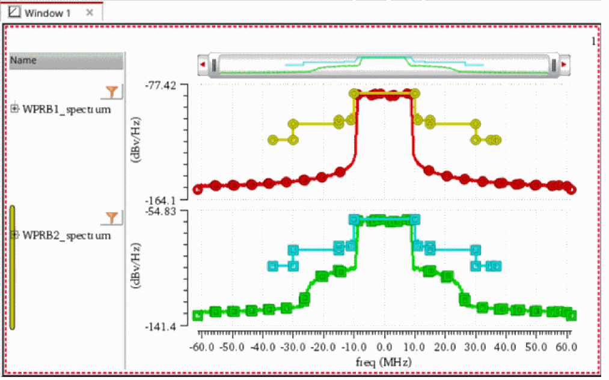

drplGetSpectrum
drplGetSpectrum(t_wirelessProbe) =>o_waveform/ nil
Description
Creates a waveform object that represents the spectrum of the signal to which the specified wireless probe is connected. The x- and y-axis vectors of the waveform are frequency and dBv/Hz, respectively.
You must have run a wireless envelope simulation before using this function.
Arguments
|
Name of the wireless probe which is connected the signal whose spectrum you want to plot. |
Value Returned
|
A waveform object, representing the spectrum of the signal to which the specified wireless probe is connected. |
|
Examples
The following example shows how to plot spectrum of the signals to which the wireless probes, WPRB1 and WPRB2 are connected.
openResults("/home/user/envlpsim/WirelessLib/wireless_LTE_W_Modulator_and_DAC_12_bit/maestro/results/maestro/ExplorerRun.0/psf/Wireless/psf")
;Opens the simulation results of wireless envelope analysis stored in the specified directory.
results()
;Lists the results available in the currently open results directory.
selectResult('envlp_fd)
;Selects the results result 'envlp_fd'.
w1=drplGetSpectrum("WPRB1")
;Creates a waveform object that represents the spectrum of the net (signal) to which the wireless probe WPRB1 is connected.
w2=drplGetSpectrum("WPRB2")
;Creates a waveform object that represents the spectrum of the net (signal) to which the wireless probe WPRB2 is connected.
awvCreatePlotWindow()
;Creates a Waveform window.
awvPlotWaveform(
awvGetCurrentWindow()
list(w1 w2)
?expr list("WPRB1_spectrum" "WPRB2_spectrum")
?color list("y1" "y66")
?index list(1 2)
?lineType list("line" "line")
?lineStyle list("solid" "solid")
?lineThickness list("thick" "thick")
?showSymbols list(t t)
?dataSymbol list(4 5)
?stripNumber list(1 2)
)
;Plots waveforms "WPRB1_spectrum" and "WPRB1_spectrum" in the strip number 1 and 2 of the current Waveform window.
=>"/home/user/envlpsim/WirelessLib/wireless_LTE_W_Modulator_and_DAC_12_bit/maestro/results/maestro/ExplorerRun.0/psf/Wireless/psf"
=>
(envlp_fd conste binary fwrls ccdf
avgwrls param model instance output
designParamVals primitives subckts variables
)
=> stdobj@0x375d9068
=> srrWave:0x3ad23ac0
=> srrWave:0x3ad22590
=> window:3
=> t

Return to top